Welcome to the era of spatial computing.
Apple Vision Pro seamlessly blends
digital content with
your physical space.
You navigate simply by using your
eyes, hands, and
voice.
So you can do the things you love
in ways never before
possible.

Watch the film
Watch the Guided Tour
Apps
Free your desktop.
And your apps will follow.
Your apps live
in your
space.
With Apple Vision Pro, you have an infinite canvas that transforms how you use the apps you love. Arrange apps anywhere and scale them to the perfect size, making the workspace of your dreams a reality — all while staying present in the world around you. Browse the web in Safari, create a to‑do list in Notes, chat in Messages, and seamlessly move between them with a glance. You can even bring your Mac workflows into Apple Vision Pro wirelessly with Mac Virtual Display.
Entertainment
The ultimate theater.
Wherever you are.
A new dimension for
entertainment.
Apple Vision Pro can transform any room into your own personal theater. Expand your movies, shows, and games to your perfect size and experience them in Spatial Audio. Apple Immersive Video puts you in the center of the action with mind‑blowing immersion. And with more pixels than a 4K TV for each eye, you can enjoy stunning content wherever you are — on a long flight or the couch at home.
Photos and Videos
Be in the moment.
All over again.
Your memories
come alive.
Apple Vision Pro is Apple’s first 3D camera. You can capture magical spatial photos and spatial videos in 3D, then relive those cherished moments like never before with immersive Spatial Audio. Your existing library of photos and videos looks incredible at remarkable scale. And panoramas wrap around you — making you feel like you’re standing right where you took them. You can also take spatial videos with iPhone 15 Pro, then view them on Apple Vision Pro.
Connection
Get on the same page.
In the same space.
Make meetings more
meaningful.
Apple Vision Pro makes it easy to collaborate and connect wherever you are. FaceTime video tiles are life‑size, and as new people join, the call simply expands in your room. Or choose to use your spatial Persona and feel like you are sharing the same space with others. And in FaceTime, you can use apps to collaborate with colleagues on documents simultaneously.
Design
Designed by Apple.
Apple Vision Pro is the result of decades of experience designing high‑performance, mobile, and wearable devices — culminating in the most ambitious product Apple has ever created. Apple Vision Pro integrates incredibly advanced technology into an elegant, compact form, resulting in an amazing experience every time you put it on.
Light Seal. The Light Seal gently flexes to conform to your face, delivering a precise fit while blocking out stray light.
Head Band. The Head Band
provides cushioning,
breathability, and stretch. The Fit Dial lets you adjust
Vision Pro precisely to your head.
Power. The external battery supports up to 2 hours of use, and all‑day use when plugged in.1
Sound. Speakers positioned close to your ears deliver rich Spatial Audio while keeping you aware of your surroundings.
EyeSight. An outward display reveals your eyes while wearing Vision Pro, letting others know when you are using apps or fully immersed.
Sound. Speakers positioned close to your ears deliver rich Spatial Audio while keeping you aware of your surroundings.
A singular piece of three-dimensionally formed laminated glass acts as an optical surface for the cameras and sensors that view the world. It flows seamlessly into a custom aluminum alloy frame that gently curves to wrap around your face while serving as an attachment point for the Light Seal.

Technology
Innovation you can
see, hear, and feel.
Pushing boundaries from the inside out. Spatial experiences on Vision Pro are only possible through groundbreaking Apple technology. Displays the size of a postage stamp that deliver more pixels than a 4K TV to each eye. Incredible advances in Spatial Audio. A revolutionary dual‑chip design featuring custom Apple silicon. A sophisticated array of cameras and sensors. All the elements work together to create an unprecedented experience you have to see to believe.
More pixels than a 4K TV. For each eye.
The custom micro‑OLED display system features 23 million pixels, delivering stunning resolution and colors. And a specially designed three‑element lens creates the feeling of a display that’s everywhere you look.
Our most advanced
Spatial Audio system
ever.
Dual-driver audio pods positioned next to each ear deliver personalized sound while letting you hear what’s around you. Ambient Spatial Audio makes sounds feel like they’re coming from your surroundings. And with audio raytracing, Vision Pro analyzes your room’s acoustic properties — including the physical materials — to adapt and match sound to your space.
Responsive, precision eye tracking.
A high‑performance eye‑tracking system of LEDs and infrared cameras projects invisible light patterns onto each eye. This advanced system provides ultraprecise input without your needing to hold any controllers, so you can accurately select elements just by looking at them.


A sophisticated sensor array.
A pair of high-resolution cameras transmit over one billion pixels per second to the displays so you can see the world around you clearly. The system also helps deliver precise head and hand tracking and real‑time 3D mapping, all while understanding your hand gestures from a wide range of positions.

Revolutionary dual‑chip performance.
A unique dual‑chip design enables the spatial experiences on Apple Vision Pro. The powerful M2 chip simultaneously runs visionOS, executes advanced computer vision algorithms, and delivers stunning graphics, all with incredible efficiency. And the brand-new R1 chip is specifically dedicated to process input from the cameras, sensors, and microphones, streaming images to the displays within 12 milliseconds — for a virtually lag-free, real-time view of the world.
Privacy and Security
When it comes to privacy, we don’t blink.
Privacy and security built in. Like every Apple product and service, Apple Vision Pro was designed to help protect your privacy and keep you in control of your data. It builds on the foundation of existing Apple privacy and security features with new technologies like Optic ID, a secure authentication system that uses the uniqueness of your iris.
Use AR to view
Apple Vision Pro.
Open this page using
Safari on
your iPhone or
iPad.
An all‑new platform.
An all‑new world for developers..
The
possibilities for
what developers can dream up and build for
Apple Vision Pro are
endless. And with
familiar tools and frameworks like Xcode,
SwiftUI, RealityKit, and ARKit,
as well
as
support for Unity and the new 3D-content
preparation app Reality Composer
Pro,
developers have everything they need to
create amazing spatial
experiences.